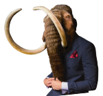
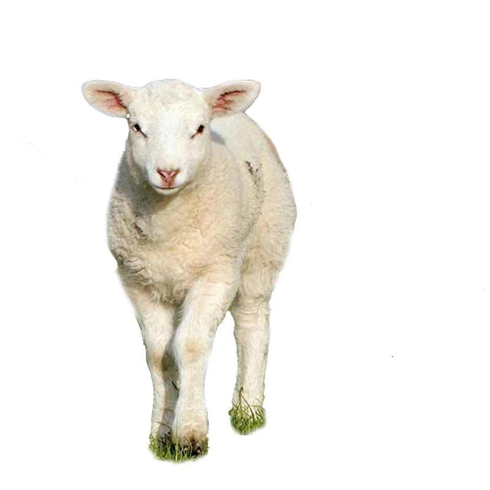
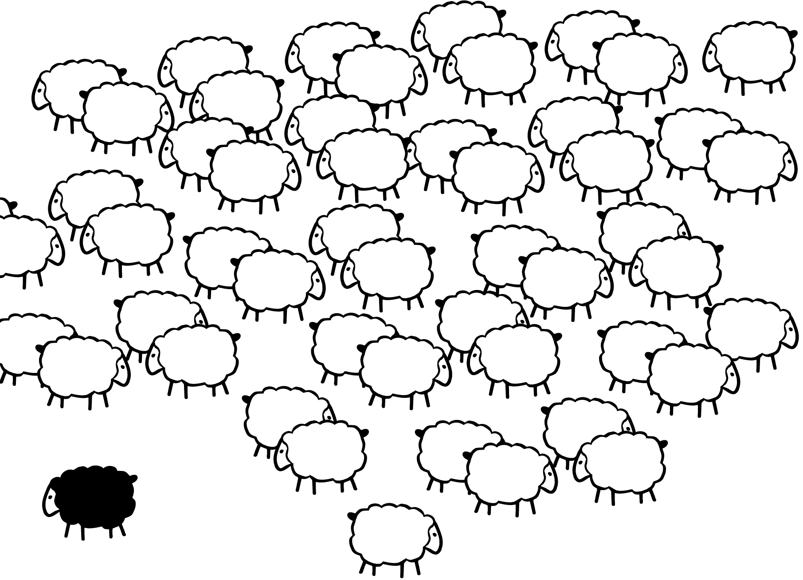
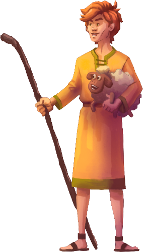

|  |
Роль стадного чувства в жизни учащихся СУНЦ МГУ |
|---|
|
А что такое стадное чувство? Ну, представьте себе, что вы - это овечка, а ваша толпа - это вот эти мягкие, пушистые заросли сосен, в которых так уютно и безопасно! В общем, стадное чувство - это такая врожденная потребность чувствовать себя частью коллектива, быть частью толпы, где каждый - как звезда в небе, но вместе вы - целая галактика! |
 |
|  |
А у нас в МГУ этому чувству научились настоящие профессионалы. Мы, ученики, преподаватели, сотрудники - все мы любим собираться вместе, будь то на лекции, научном семинаре или просто в столовой за кружечкой кофе. Почему? Потому что вместе всегда веселее! Мы - это не просто общество, мы - настоящая стая, готовая к самым интересным открытиям и приключениям! |
|
Итак, друзья, давайте вместе исследовать мир стадного чувства в СУНЦ МГУ - месте, где каждый найдет свою "овечку" и вольется в веселую, энергичную "толпу" наших ярких и замечательных людей! Погнали на волне стадного духа! |
 |